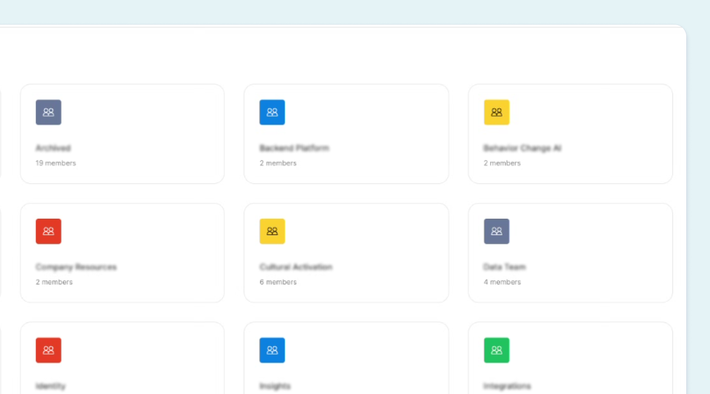
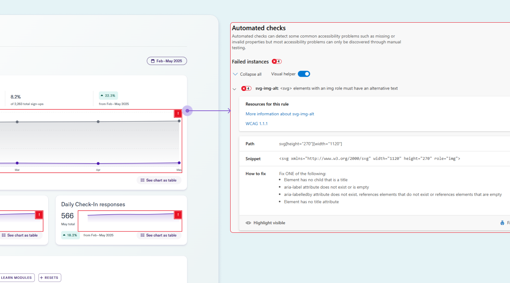
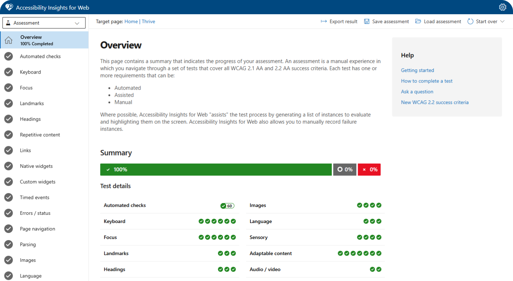
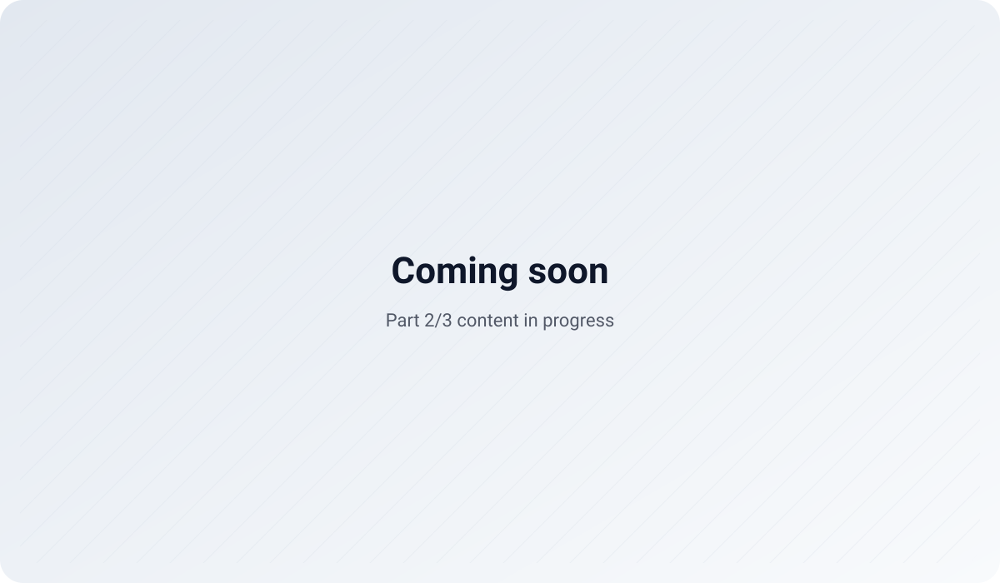
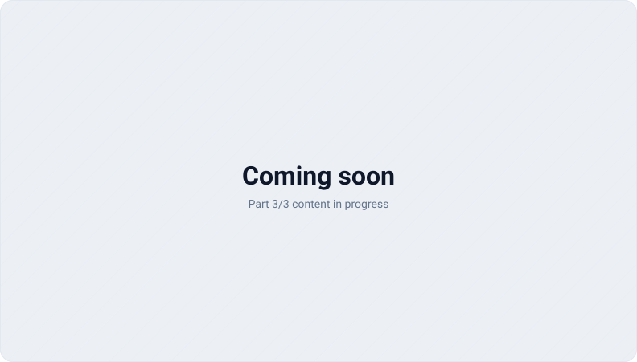

Synopsis
Design systems are only useful if they reduce friction for teams. This work focused on building the “boring” foundations (audit, tokens, components, and docs) so teams can ship consistently and so future parts of the story can scale without rework.
3 part story
This case study is written as a trilogy: build the foundation, scale it across teams, then mature it with accessibility and localization readiness.
Foundations
Audit → token architecture → core components → docs & governance baseline.
Jump to Part 1Scaling & Evolving
Adoption strategy, migration playbooks, and integrating with product workflows.
Jump to Part 2Accessibility & Localization
WCAG patterns, content guidelines, and i18n/RTL-ready components & tokens.
Jump to Part 3Part 1: Foundations
For the most part, every Lego piece connects to every other Lego piece. There is no silo of green pieces
that refuse to connect with the blues. Yellow pieces aren’t busy trying to establish their own kingdom.
Larger Lego pieces don’t take over meetings or require more attention. All Lego pieces work together
toward a common and unified goal. While that seems like a good idea; being able to interchange and combine
any Lego pieces, the output would not be ideal. It can be mismatched and oftentimes, it could be a messy
process.
Here are the problems that were happening in our kingdom: low usage in reusable
components, unclear guidelines within the documentation, and the majority of the components did not meet
accessibility standards.
My Role
I owned the end-to-end foundation work, from discovery and audit through token decisions, component patterns, and documentation scaffolding.
Key responsibilities included:
- 🔍 System Audit & UX Diagnosis - Conducted a cross-platform audit of 100+ screens to identify redundant patterns, design gaps, and accessibility violations.
- 🧱 Foundation Design & Token Definition - Established base design tokens for color, typography, spacing, and elevation, aligning both design and code.
- 📦 Component Library Creation - Partnered with engineering to build a centralized, accessible component library in Figma and aligned with Storybook.
- ♿ Accessibility Integration - Embedded accessible defaults (contrast, focus states, ARIA roles) into the system and created guidelines for inclusive design.
- 📚 Documentation & Governance - Created usage documentation and helped shape a governance model for ongoing contribution, versioning, and maintenance.
Problem
The product UI had grown organically. Patterns diverged across squads, components were duplicated,
and design decisions lived in people’s heads instead of in the system. there was no single source of truth
for our design language. The absence of a centralized design system led to a disjointed product experience
and operational inefficiencies.
Through an audit and cross-functional conversations, I identified 3
key issues:
1. Component Fragmentation Across Teams
Each product team built their own set of UI
components over time; components like buttons, modals, inputs; all slightly different in spacing,
behavior, or interaction. This led to a fragmented user experience and extra overhead for both design and
engineering. Fixing a bug in one place of a component didn’t guarantee it was fixed elsewhere. Often
times, it was not always under the hood change. It also made onboarding harder, since new team members had
to navigate inconsistent patterns across the platform.

2. Inefficient Design-to-Development Workflow
Without a shared set of common
components, designers were constantly recreating the same UI patterns from scratch (ex. buttons, cards,
inputs - often with slight variations). Handoffs became messy since engineers had to interpret and rebuild
designs manually, which led to inconsistencies and back-and-forth revisions. It slowed everyone down and
made even simple features feel heavier to ship. A lot of time was wasted fixing things that could’ve been
solved upfront with standardization.

3. Missing Accessibility Standards
A lot of the existing components didn’t follow
basic accessibility standards. A few examples like proper color contrast, keyboard navigation, or semantic
HTML were either missing or inconsistent. That meant every team had to solve for accessibility on their
own, often overlooking key details or duplicating efforts. It also made it hard to scale inclusive design
across the platform, since there was no reliable baseline to build from. We needed a more thoughtful,
centralized approach to bake accessibility in from the start.

Solution
To address these issues, I led the creation of a foundational design system focused on scalability, usability, and accessibility. This included:
We set up a collaborative working model with design and engineering leads to make sure the system wasn’t just built in isolation. For example, we’d co-create components like tables or filters together, aligning early on technical constraints and design needs. We also ran pilots with a few product teams to gather feedback before rolling things out more broadly. This helped us catch edge cases early, make quick adjustments, and build trust. Over time, that collaboration turned into shared ownership, which made adoption smoother and more sustainable.

Most components are designed to meet AA-level accessibility standards outlined in WCAG 2.1 and 2.2. We regularly use Accessibility Insights to audit components for issues like insufficient color contrast, missing ARIA labels, or poor keyboard navigation. For example, we caught low contrast in secondary buttons and missing focus states in modals, which we quickly resolved. We also ensured icon-only buttons had proper aria-labels for screen readers. This ongoing accessibility review process helps us catch issues early and ship components that are usable for everyone.

We built a shared design token architecture that kept Figma and the codebase in sync. UI elements like color, spacing, and typography were defined in one source of truth. For example, we mapped semantic tokens like button-primary-bg and text-muted directly from our design library to the front-end, which reduced handoff confusion and visual mismatches. When we updated a global spacing token, it reflected consistently across both platforms without manual overrides. This alignment made implementation faster and helped designers and engineers speak the same language. It also reduced drift over time and simplified onboarding for new team members.

We built a centralized component library shared across teams, with clear specs, usage guidelines, and interaction patterns baked in. Since we support three design systems, we separated them into distinct libraries, each tailored to a specific product surface, so teams knew exactly where to go without second-guessing. This structure cut down confusion, reduced duplicate work, and made adoption much smoother. It also gave us more control when rolling out updates specific to each system.

Impact
The system reduced inconsistencies and sped up delivery by making decisions reusable. We also created a foundation to scale future parts of the system without rewrites.
What I’m tracking next
Adoption by team, component reuse rates, design/development cycle time, and accessibility defect trends.
Reflection
For me, this work wasn’t just about making things look consistent; it was about building the right blocks
so the people creating the product could move faster and with less friction. Like snapping Legos into
place, watching designers and engineers finally use the same pieces and speak the same visual language
felt like a real win.
If I were to do it again, I’d push to get stakeholders aligned even earlier and be more intentional about
tracking the system’s impact from day one. That said, getting this foundation in place was a huge unlock.
It gave us the momentum to move faster, ship with more confidence, and focus on solving bigger product
problems.

- Evidence beats opinion. Audit artifacts made decisions faster and less political.
- Tokens are an API. Naming by intent makes future theming and refactors survivable.
- Docs are part of the component. Missing guidance becomes Slack messages and bugs.
- Governance can be lightweight. A simple intake + review process prevents drift.
Part 2: Scaling & Evolving
This section is intentionally a placeholder while Part 2 is being written.

Part 3: Maturing with Accessibility & Localization
This section is intentionally a placeholder while Part 3 is being written.
